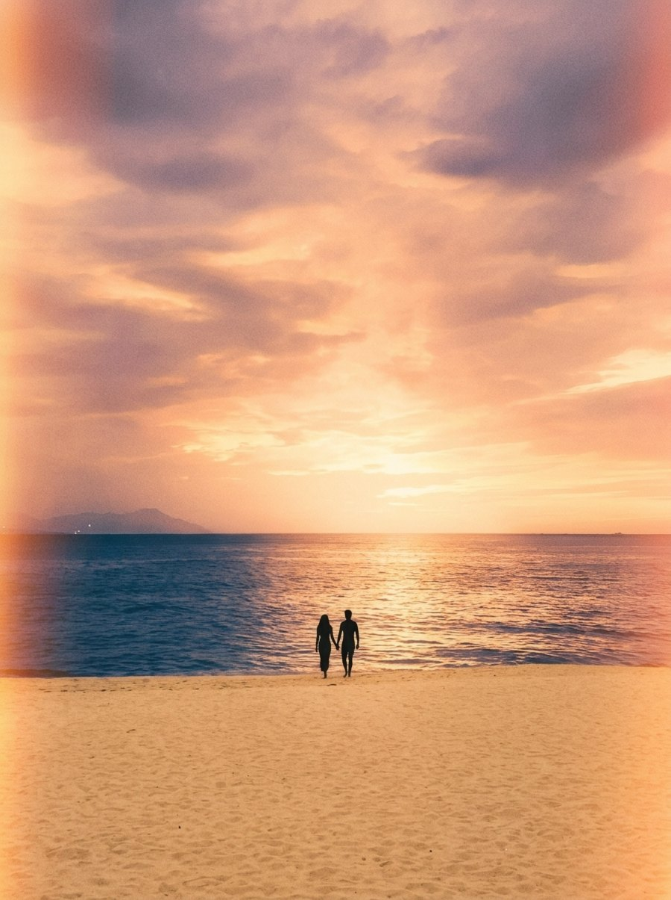

SOFT CCD
'26 11 19
雪山与高原湖畔
NO.01 / PLATEAU坐在清晨微凉的木栏杆上看云雾漫过山脊，风再大，靠在一起就不冷了。
把还没来得及亲口说完的心事，和想要拉着你走过的远方，
先洗进这一卷带着暖色炫光与轻微模糊感的 19 岁底片里。
坐在清晨微凉的木栏杆上看云雾漫过山脊，风再大，靠在一起就不冷了。
 SOFT CCD
'26 11 19
SOFT CCD
'26 11 19
在粉紫与蓝调交错的黄昏海面吹吹风，什么话也不用急着说，只是看远方的冰山。

SOFT CCD '26 11 19踩着松软的海沙慢慢走，等夕阳一点点沉进海平面，把我们的影子拉得很长。
 SOFT CCD
'26 11 19
SOFT CCD
'26 11 19
坐在摇摇晃晃的车厢里共享一副耳机，窗外是落日熔金，窗内是刚好的体温。
 SOFT CCD
'26 11 19
SOFT CCD
'26 11 19
把城市的喧嚣留在玻璃外面，安静地并肩站一会儿，看整片夜空为你亮起来。
不用赶去什么特别的景点，在任何一个城市的秋天傍晚，牵着手沿着路灯走下去就很好。
里面有一封躺在备忘录里很久的话，也有写给未来的约定。
轻触拆开这封信 ✉️该从哪里落笔呢，你的十九岁。
总觉得日子不该走得这样快。冬意一深，我恍惚间还以为又到了高三快要“一诊”的时候——按理说，这会儿我本该正坐在家里的台灯下，对着淘宝屏幕，借口挑我喜欢的款式，偷偷给你选着文具。其实哪是什么顺手呢，不过是那时的想念太满，迫切地需要一点具体的安置。大概就是从那句说笑般的生日礼物起，某种微妙的秩序在我心里悄然重写——那是沦陷最初的预兆。
有人说，命运的职责在两个人初遇的那一刻便已经完尽了。可到了我们这里，它好像总有些放心不下，偏要在暗中多推一把——它不动声色地拨动了 xpy 的换座位软件，穿过教室里扬起的粉笔灰，给了我再一次靠近你、重新认识你的机会。
前些天我做了一个梦。梦见清晨的第一抹阳光斜斜地切进窗户，你就站在光里，在我眼前。醒来时心里空落落的，甚至有些孩子气地想：为什么人不能永远留在高中呢？如果可以重来一次，我宁愿再忍受一遍当时所有的枯燥与煎熬。可转念一想，记忆里那段如黄金般闪耀的日子，又哪是上天白白赐予的呢？分明是因为我遇见了那样一群鲜活滚烫的人，是因为我遇见了你。是你，才让原本苦涩漫长的跋涉，变成了落日后久久不肯散去的余晖。
那些散落在时光里的切片，至今仍在反复发光：
是你捧着我的相机，抬起头真诚夸赞我照片的那个瞬间——镜头原本是没有感情的，只是拍照的人用了心，我不是在按快门，是在借着取景框偷偷留住有你的时间；
是你递过一颗纸糖果、眉眼弯弯逗我发笑的瞬间——那种喜欢悬在舌尖，像咬开一颗青提，酸涩的皮破开后，清清凉凉的甜意便漫了上来；
也是你用长长的信笺，一笔一划回溯我们初识的那天；是分别多时后，耳机里猝不及防响起某首歌的那一刻……
这些零碎的瞬间在心里轻轻一碰，便拼出了你在我青春里的全部重量。原来，让人目光变得匆促的心动叫做喜欢；而心里那块被你装满、像半个米缸终于溢出了缸沿般的踏实，叫做爱。
只是，与轰轰烈烈的青春冲动相反，那时的我太擅长把汹涌的感情藏进沉默里。一个人没有那么喜欢谁的时候，总觉得自己足够理性、足够洒脱；可一旦真正把你放进心里，以前所有关于自己的判断就统统失效了。我像走在夜路上的盲人，小心翼翼地试探着你的方向，鼓起全部勇气把你约出来，却又在临门一脚时咽下了正式的告白。我既怕错过你，更怕彻底失去你；而你又藏得那样好，好到我不敢生出一分一毫的笃定。
直到那段时光轻轻合上，我写给你的信，依然安静地躺在手机备忘录里，像一页未曾投递的折角书签，平静而沉默。
今天是你十九岁的起点，我想把那封躺在备忘录里许久的信，原原本本地摊开在你面前：
嘴上写着“做好了准备”，可真到了看见你迟疑和纠结的那一刻，我还是慌了神，好像一下子承住了万千重量。
爱一个人，到底是怎样的感觉呢？
它应当是一个深思熟虑的判断吗？是冲动，还是勇气？
我想，它大概是我漫长而平凡的生活里，鲜有的浪涛与波澜起伏吧。
你会爱我吗？
Is it a crime to be unsure?
In time we'll find if we're suitable.
没关系的，给时间一点时间。爱情本就是一场属于勇敢者的游戏，真正读懂一个人或许需要穷尽一生的时间，而我们都在参与这场温柔的赌局——赌我们在看清彼此全部的脆弱与棱角之后，依然愿意坚定地爱下去。爱，从来都是勇敢者的奖励。
你看过《奥本海默》吗？我脑海里关于未来的样子，就像电影里的主角和他的妻子那样：无论往后岁月里有多少磨难与争吵，无论前一秒争执得多么面红耳赤、不可开交，只要下一秒我转过身，向你伸出手，你仍然愿意把手放进我掌心，握紧我，共同继续走下去。
被人深爱给予我力量，而深爱一个人赋予我勇气。
十九岁生日快乐，嘉怡。世界终于要见到我早就见到过的、那个熠熠生辉的你了；如果把《喜欢你》做成一本书，你是一部诗的终点，而这句“我爱你”，只是序言。